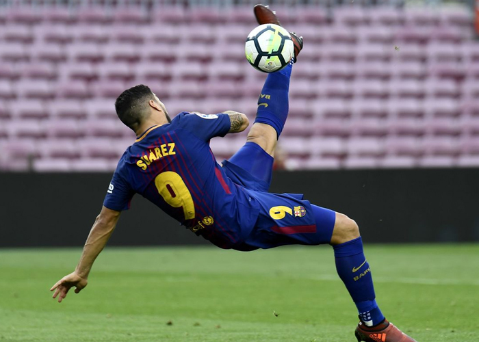

ФутболЧому так люблять цей спорт? З ним розвивається не тільки швидкість, але і підвищується кмітливість, витривалість, тут обов’язково навчишся точності й швидкості реакції. Плюс гарт організму. Тренування проходять в будь-який час року, але завжди на вулиці, будь то рання весна або пізня осінь. У футбол грають люди, у яких дуже сильно розвинене почуття азарту.  |